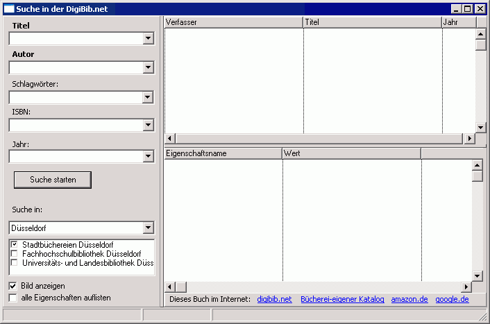

Mediensuche
Dieses Fenster ermöglicht es Informationen über die Medien der Büchereien in der digibib.net zu finden.

Auf der linken Seite kann man die gewünschten Suchoptionen eingeben, welche dann und-verknüpft werden.
Außerdem kann man auswählen in welchen Büchereien gesucht werden soll.
Wenn man auf "Suche starten" klickt, sendet das Programm die Anfrage an die digibib und zeigt bis zu 200 Suchergebnisse in der rechten Liste an. (bei der Suche in der Stadtbücherei Düsseldorf kann dies recht lange dauern).
Wählt man dann ein Medium in dieser Liste aus, so fordert das Programm weitere Informationen darüber an. Nach kurzer Zeit werden die von der Bücherei gelieferten Informationen in der rechten, unteren Liste angezeigt. Anschließend wird noch versucht das Titelbild anzuzeigen.
Über die unter der Liste angezeigten Links, kann man gegebenfalls weitere Informationen über das ausgewählte Medium anfordern.